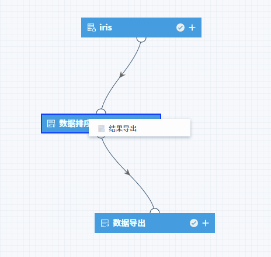
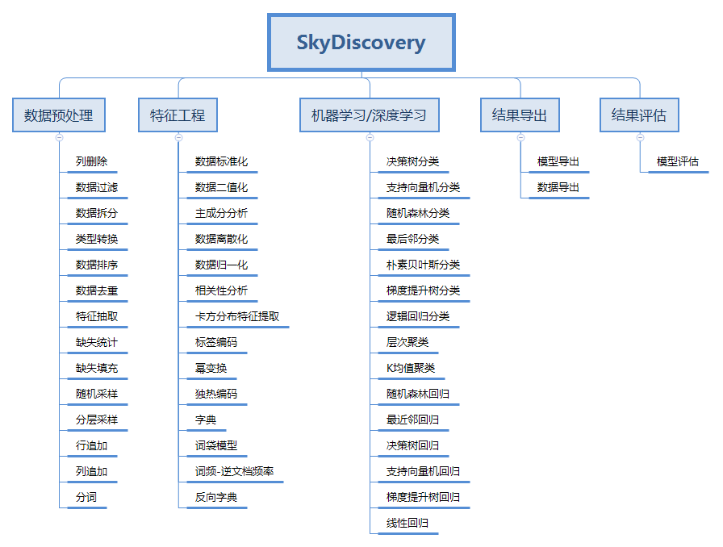

产品优势
SkyDiscovery机器学习平台的产品主要优势如下。
良好的交互设计
通过对底层的分布式算法封装，提供拖拉拽的可视化操作环境，让数据挖掘的创建过程像搭积木一样简单。缩短了您与数据的距离，真正实现了数据的触手可及。同时也提供了命令行工具，方便您将算法嵌入到自己的工程中。

丰富的机器学习算法
SkyDiscovery平台不仅提供了基础的聚类、回归等机器学习算法，也提供了特征处理等比较复杂的算法。

业务定制化
支持用户自定义算法，封装为业务组件方便使用。
一站式的机器学习体验
平台除了提供模型训练功能，还提供在线预测以及离线调度功能，让机器学习训练结果和业务可以无缝衔接。
支持主流深度学习框架
深度学习是机器学习中一种对数据进行表征学习的方法，SkyCompute主要提供了以下深度学习的框架：
Caffe2
TensorFlow
Keras
PyTorch